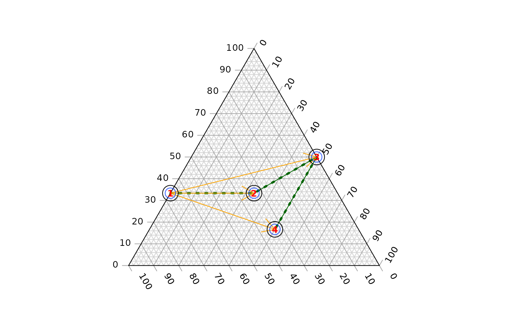

Plot shapes onto a ternary diagram created with TernaryPlot(),
or a Holdridge plot created with HoldridgePlot().
AddToHoldridge(PlottingFunction, pet, prec, ...)
HoldridgeArrows(fromCoordinates, toCoordinates = fromCoordinates, ...)
HoldridgeLines(pet, prec, ...)
HoldridgePoints(pet, prec, ...)
HoldridgePolygon(pet, prec, ...)
HoldridgeText(pet, prec, ...)
AddToTernary(PlottingFunction, coordinates, ...)
TernarySegments(fromCoordinates, toCoordinates = fromCoordinates, ...)
TernaryArrows(fromCoordinates, toCoordinates = fromCoordinates, ...)
TernaryLines(coordinates, ...)
TernaryPoints(coordinates, ...)
TernaryPolygon(coordinates, ...)
TernaryText(coordinates, ...)
JoinTheDots(coordinates, ...)Function to add data to a plot; perhaps one of
points,
lines or
text.
Numeric vectors giving potential evapotranspiration ratio and annual precipitation (in mm).
Additional parameters to pass to PlottingFunction().
If using TernaryText(), this will likely include the parameter labels,
to specify the text to plot. Other useful
graphical parameters include srt to rotate text.
For TernaryArrows(), coordinates at
which arrows should begin and end; cf. x0, y0, x1 and y1 in
arrows. Recycled as necessary.
A list, matrix, data.frame or vector in which each element (or row) specifies the three coordinates of a point in ternary space.
HoldridgeArrows(): Add arrows to Holdridge plot
HoldridgeLines(): Add lines to Holdridge plot
HoldridgePoints(): Add points to Holdridge plot
HoldridgePolygon(): Add polygons to Holdridge
plot
HoldridgeText(): Add text to Holdridge plot
TernarySegments(): Add segments
TernaryArrows(): Add arrows
TernaryLines(): Add lines
TernaryPoints(): Add points
TernaryPolygon(): Add polygons
TernaryText(): Add text
JoinTheDots(): Add points, joined by lines
Other Holdridge plotting functions:
HoldridgeHypsometricCol(),
HoldridgePlot(),
holdridgeClasses,
holdridge
# Data to plot
coords <- list(
A = c(1, 0, 2),
B = c(1, 1, 1),
C = c(1.5, 1.5, 0),
D = c(0.5, 1.5, 1)
)
# Set up plot
oPar <- par(mar = rep(0, 4), xpd = NA) # reduce margins and write in them
TernaryPlot()
# Add elements to ternary diagram
AddToTernary(lines, coords, col = "darkgreen", lty = "dotted", lwd = 3)
TernaryLines(coords, col = "darkgreen")
TernaryArrows(coords[1], coords[2:4], col = "orange", length = 0.2, lwd = 1)
TernaryText(coords, cex = 0.8, col = "red", font = 2)
TernaryPoints(coords, pch = 1, cex = 2, col = "blue")
AddToTernary(graphics::points, coords, pch = 1, cex = 3)

# An equivalent syntax applies to Holdridge plots:
HoldridgePlot()
pet <- c(0.8, 2, 0.42)
prec <- c(250, 400, 1337)
HoldridgeText(pet, prec, c("A", "B", "C"))
AddToHoldridge(graphics::points, pet, prec, cex = 3)
# Restore original plotting parameters
par(oPar)